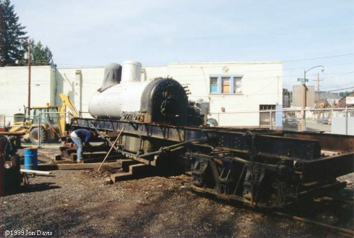
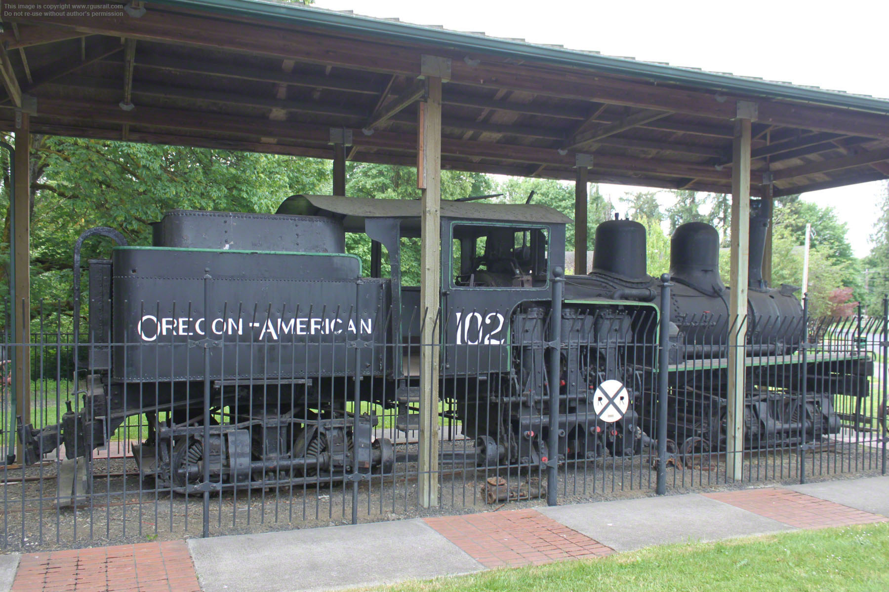

Last updated: 7 September, 2025
| Builder: | Lima |
| Build #: | 2490 |
| Date: | 1912 |
| Engine #: | 102 |
| Railroad: | Oregon America Logging (Long Bell Lumber) |
| Website: | |
| Email: | |
| Location: | Shay 102 City Park, 790 Adams Ave, Vernonia, OR 97064 Not an actual address. |
| GPS: | 45.858533, -123.192645 |
| Phone: | |
| Status: | Display |
| Notes: | 2-truck Shay Long-Bell #102 is seen here being reassembled in April of 1999 after an aborted restoration attempt. The restoration effort ceased when it was found that the needed boiler repairs were beyond the scope of the group's resources. Built in 1912 for the Western Cooperage Co as #2 at Olney, OR, it was later sold to the Astoria Southern Railway of Astoria. In 1922 the Porter Carstens Logging Co of Estacada, OR purchased the locomotive and then sold it to the Clark County Timber Co of Yacolt, WA. In 1928, the Shay went to Oregon-American at Vernonia as #102. Oregon-American became part of the Long-Bell Lumber Co in 1953, who then merged in 1956 with the International Paper Co. Retired in 1958, #102 was donated to Vernonia and placed on display. |
| Class: | |
| Gauge: | 4'-8½" |
| F.M.Whyte: | Shay2Tr |
| Drivers: | |
| Gear Ratio: | |
| Tractive Effort: | |
| Weight: | |
| Weight on Drivers: | |
| Length: | |
| Boiler: | |
| Cylinders: | |
| Top Speed: | |
| Horsepower: | |
| Fuel: | |
| Fuel Type: | |
| Water: | |
| Steam psi: |